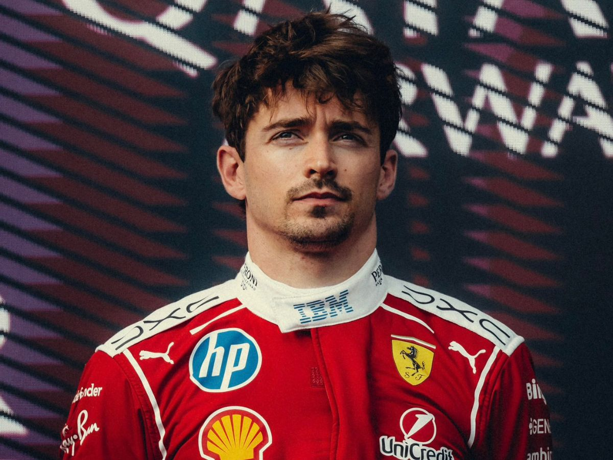

Charles Leclerc was born in Monaco in 1997 and grew up dreaming of racing for Ferrari — and remarkably, he made that dream a reality. After winning back to back titles in F3 and F2, he joined Sauber for a single season in 2018 before Ferrari came calling. He took two wins in his very first Ferrari season in 2019 and has been the team's standard bearer ever since. Passionate, blindingly quick over a single lap, and with a contract keeping him at Maranello until at least 2029, Leclerc is the future and present of this team.

Lewis Hamilton
Lewis Hamilton needs very little introduction. The most decorated driver in Formula 1 history, with seven World Championships and over 100 race wins, Hamilton shocked the world when he left Mercedes for Ferrari ahead of 2025. It was the transfer that dominated the off season like nothing before it. Now in his second year at Maranello, Hamilton brings a wealth of experience, an obsessive work ethic, and an aura that very few athletes in any sport have ever matched. Ferrari fans were cautious at first. They shouldn't have been.
Driver History
Ferrari has been home to some of the greatest drivers who ever lived. Alberto Ascari won back to back championships for the team in 1952 and 1953. Niki Lauda came agonisingly close in 1976 before his near fatal crash at the Nurburgring. Jody Scheckter won the title in 1979. Then came the Schumacher era — five consecutive championships from 2000 to 2004 that redefined what dominance in Formula 1 looked like. Kimi Raikkonen brought the last title home in 2008. Sebastian Vettel came close in 2012 but couldn't quite close it out. More recently Leclerc has been the team's brightest hope, and now with Hamilton alongside him, Ferrari have perhaps their most exciting driver pairing in a generation.